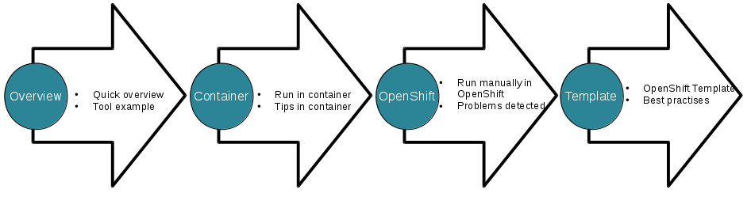

About OpenShift Origin
OpenShift is a Kubernetes and Docker powered cloud Platform-as-a-Service (PaaS) developed by Red Hat. OpenShift Origin is the upstream community project that powers OpenShift Online, OpenShift Dedicated, and OpenShift Container Platform. Built around a core of Docker container packaging and Kubernetes container cluster management, Origin is also augmented by application lifecycle management functionality and DevOps tooling. All source code for the Origin project is available under the Apache License (Version 2.0) on GitHub OpenShift Origin
About Big Data as a Service (BDaaS)
Cloud computing is a strong focus toward service orientation. I't usual to hear mention of it in conjunction with expressions like "whatever as a service" (XaaS). Big Data frameworks are not an exception, taking into account the final target of a software service is to run applications (Software as a Service - SaaS is the formal term), to build data oriented applications (or analytics oriented) within the concept of Big Data as a Service (BDaaS) it makes good sense.
To bring SaaS, in general terms, to the reality the "Platform as a Service" environment is a real advantage: OpenShift Origin, the open source PaaS on top of Docker and Kubernetes enter in scene.
Platform as a Service Cloud platforms act as run-time environments that support developer necesities and production loads with agility, and flexibility. Because Big Data frameworks are strongly development oriented, to bring these platforms to the software life-cycle offered by a PaaS probably is a must nowadays.
About Big Data Containers Project
The Big Data Containers Project is "A project for Big Data as a Service (BDaaS) with Containers and Kubernetes (OpenShift Origin)".
Big Data Containers Project's goals are:
- A research space for dive into the concept of Big Data as a Service
- A learning place for Big Data ecosystem and Containers on top of OpenShift Origin
- A guide-by-example of DevOps concepts and real workloads within the context of software development life-cycle CI/CD
The core repository is bigcont, here is where the main work is done.
There is a folder per Big Data tool, the working flow followed on each tool is ilustrated in the follwing picture:
- Tool overview: a quick view of the tool and hello world to understand the features availables.
- The tool in Containers: a simple example of tool containerization.
- Running in OpenShift: manually loading the tool in OpenShift, the idea is the study of particular difficulties for this integration.
- OpenShift template: ConfigMap, Pet Set, a complete OpenShift application with best practices as foundation.
The Blueprints
We can define a blueprint as a guide for making something — it's a design or pattern that can be followed.
This is the main goal of this project: create Big Data blueprints on top of OpenShift. These blueprints will be end-to-end Big Data applications, from the data ingestion, to processing and storage and finally the visualization of the data insights.
Based on these complete data intesive applications we will study Big Data concepts such as Data Governance, Data Democratization, Metadata Management, DevOps CI/CD applied to Big Data and data pipeline management, and so on.
- Data Governance
- Data Democratization
- Metadata Management
- CI/CD and DevOps applied to Big Data
- Data pipeline life-cycle
- Storage "gotchas"
- etc ...
The following is a index table for the Blueprints we are working on, right now:
| Blueprint Name | Description | Status |
|---|---|---|
| Blueprint #1 | Blueprint #1 description | Blueprint #1 status |
| Blueprint #2 | Blueprint #2 description | Blueprint #2 status |